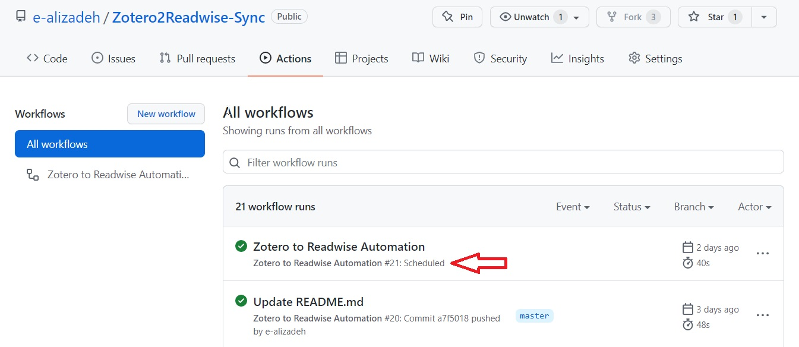

👉 This article is also published on Towards Data Science blog.
Introduction
In this post, we will go over a simple but yet powerful tool to run your script (or a task that you can program) on a time-based schedule.
If you run a script manually from time to time, then there is a good chance that you may benefit from automating the process and setting up a schedule to run automatically without you worrying about it. Just set it up once, and forget about it.
Some examples of such automation are:
- Parsing an RSS feed and sending an email automatically,
- Integrating between two services you’re using but have no native integration! (an example of this is covered in this post),
- Pulling data from a source and manipulating the data,
- etc.
In this post, I use the word task and script interchangeably. Moreover, the YAML file GitHub Actions uses to create the automation of the task/script is called the workflow file.
Requirement: A script you want to run on a time-based schedule
The most important part is to have a script that we want to run. This depends on what your task is. The example I will walk you through is the integration of my Zotero annotations to my Readwise (a paid service that integrates highlights from almost everywhere, like Twitter, Apple Books, etc) account using the Zotero2Readwise Python library (Disclaimer: I developed this library!).
The script I will be running in this post is here. Since the script I have is in Python, so, I will run it like the following python run.py <app1_token> <app2_password> <app2_user>. Running this in my personal laptop works fine since I have everything set up. But how to run above in GitHub Actions on a pre-defined schedule?
Considerations before automation
Your script will most likely be different. However, here the following tips may help you get started:
First, run the script on your system. Once you’re happy with the result and you want to automate the workflow, then use the instructions below to setup a scheduled workflow using GitHub Actions.
When developing an automation task, it is always good to think about how to run it starting from a fresh OS! It is as if you have a new system and you try to run your script there. A few question to ask yourself:
- Where should I start?
- What are software/libraries I need to install before running the script?
- Where can I find the script I want to run?
- Do I need to pass some environment variables or sensitive information like passwords?
- How should I pass sensitive information like passwords or tokens?
I will answer above questions for my workflow. Hopefully this will give you enough information to automate your task!
GitHub Actions Set up
First, we need to create the .github/workflows directory in our repository. This is where our automation file (should be in YAML format) lives. We will go over each part of the file.
You can learn the basics of GitHub Actions here.
The first section of any GitHub Actions workflow is to specify when the workflow should be triggered. This can be achieved using the on keyword. Since we want to have a scheduled automation, we can run the workflow on a schedule that uses a cron notation (discussed in next section). In addition to running on a schedule, I also want to run the workflow when any change is pushed to the master branch.
on:
push:
branches:
- master
schedule:
- cron: "0 3 * * 1,3,5" # Runs at 03:00 AM (UTC) every Monday, Wednesday, and Friday (Check https://crontab.guru/)You can also trigger your workflow on a pull request (use the pull_request keyword).
Cron (Cron job)
The cron tool , also known as cronjob, is basically a job scheduler. It is used for scheduling repetitive tasks. Its syntax consists of 5 fields as follows:
* * * * *Above cron job syntax means to run a task every minute. As can be seen, there are 5 parts that are given in bellow table (note the order from left to right)
| minute | hour | day of the month | month | day of the week |
|---|---|---|---|---|
| 0 - 59 | 0 - 23 | 1 - 31 | 1 - 12 | 0 - 6 (Sun - Sat) |
Cron job examples
Below examples covers different aspects of a cron syntax and all valid characters (* , - /).
- You can specify your schedule by choosing a valid number for each part.
*means “every” (* * * * *means at every minute on every hour of every day of the month in every month at every day of the week 🙂). Another example is30 13 1 * *meaning at 13:30 on day 1 of the month. - You can have multiple parameters for a given section by using the value list separator
,. For instance,* * * * 0,3means every minute only on Sunday and Wednesday. - You can have step values by using
/. For instance,/10 * * * *means every 10 minutes. - You can have a range of values by using dash
-. For instance,4-5 1-10 1 *means every minute between 04:00 - 05:59 AM between day 1 and day 10 of January.
And of course, you can have a combination of above options. For example, */30 1-5 * 1,6 0,1 means every 30 minutes between 01:00-05:59 AM only on Sunday and Monday in January and June.
Check crontab or crontab guru to come up with the cron syntax for your schedule.
Use Case 1
As I mentioned earlier, I want to automate my Zotero to Readwise integration using the Zotero2Readwise Python library. Let’s answer the questions we asked earlier:
Where should we start from?
We can start from a fresh Ubuntu system. So, we have the section below the jobs specifying runs-on: ubuntu-latest that will configures the job to run on a fresh virtual machine containing the latest version of an Ubuntu Linux.
Next step is to clone the current repo. You can achieve this by using uses keyword allowing us to use any action from the GitHub Actions Marketplace . We can use the master branch of actions/checkout here (you can also specify the version like actions/checkout@v2).
- name: 🍽️ Checkout the repo
uses: actions/checkout@master
with:
fetch-depth: 1Which software/libraries we must install?
This step is only necessary if you have to install a library. In my case, I have to first install Python 3.8. This can be achieved by using the actions/setup-python@v2 GitHub Action. Afterwards, we want to install the python package. We can install the Zotero2Readwise package by running pip install zotero2readwise. However, in order to execute a command on the runner, we have to use the run keyword.
- name: 🐍 Set up Python 3.8
uses: actions/setup-python@v2
with:
python-version: '3.8'
- name: 💿 Install Zotero2Readwise Python package
run: pip install zotero2readwiseWhere can I find the script I want to run?
If the script you are trying to run lives in the same repository, you can just skip this step. But here, since the Python script I want to run lives in another GitHub repository, I have to download the script using the curl Linux command.
- name: 📥 Download the Python script needed for automation
run: curl https://raw.githubusercontent.com/e-alizadeh/Zotero2Readwise/master/zotero2readwise/run.py -o run.pyRun the script
Now that we have set up our environment, we can run the script as mentioned earlier in the Requirements section.
But one last point is that since we need to pass some sensitive information (like tokens), we can achieve that by passing the secrets to Settings → Secrets → New repository secret.

These secrets will then be available using the following syntax: ${{ secrets.YOUR_SECRET_NAME }} in your YAML file.
For more information about handling variables and secrets, you can check the following two pages on the GitHub Docs about Environment variables and Encrypted secrets.
Now that we have added our secrets, we can run the script as following:
- name: 🚀 Run Automation
run: python run.py ${{ secrets.READWISE_TOKEN }} ${{ secrets.ZOTERO_KEY }} ${{ secrets.ZOTERO_ID }}Putting everything together
The file containing all steps above is shown below. The file lives on GitHub.
name: Zotero to Readwise Automation
on:
push:
branches:
- master
schedule:
- cron: "0 3 * * 1,3,5" # Runs at 03:00 AM (UTC) every Monday, Wednesday, and Friday (Check https://crontab.guru/)
jobs:
zotero-to-readwise-automation:
runs-on: ubuntu-latest
steps:
- name: 🍽️ Checkout the repo
uses: actions/checkout@master
with:
fetch-depth: 1
- name: 🐍 Set up Python 3.8
uses: actions/setup-python@v2
with:
python-version: '3.8'
- name: 💿 Install Zotero2Readwise Python package
run: pip install zotero2readwise
- name: 📥 Download the Python script needed for automation
run: curl https://raw.githubusercontent.com/e-alizadeh/Zotero2Readwise/master/zotero2readwise/run.py -o run.py
- name: 🚀 Run Automation
run: python run.py ${{ secrets.READWISE_TOKEN }} ${{ secrets.ZOTERO_KEY }} ${{ secrets.ZOTERO_ID }}
Use Case 2
Following above process, I set up a scheduled update of my GitHub page that runs twice a week. It has been working fine till now (so far, it has been over an year at the time of this post). This automation does the following:
- Parse my personal blog and retrieve the title and the link to my latest posts.
- Add the blog posts to a section of my GitHub README page.
- Add a note about the date and time of the auto-generated README page to the page footer.
You can find the file that run above tasks on GitHub. This automation also runs a python script.
GitHub Actions Cost
GitHub Actions usage is free for public repositories. However, the free plan for private repositories has some limitations (at the time of publishing this post, the GitHub Actions free plan offers 2000 minutes (per month) and 500MB of storage which should be enough for most use cases) [1].
Conclusion
In this post, we saw how GitHub Actions can be used to run a task on a time-based schedule. The sky is the limit here. Think about a workflow or a task you are currently running every so often. If you can put the task in a script that can be run on your computer (it doesn’t matter if it is in Python, Bash or any other script), then you can actually set up the automation.
Citation
@online{alizadeh2022,
author = {Esmaeil Alizadeh},
title = {Automate {Your} {Workflow} with {GitHub} {Actions} and
{Cron}},
date = {2022-01-20},
url = {https://new.ealizadeh.com/blog/automate-workflow-github-cron},
langid = {en}
}